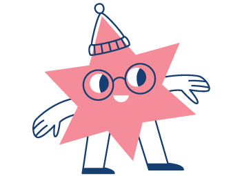
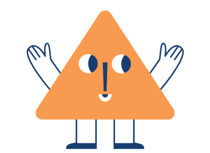
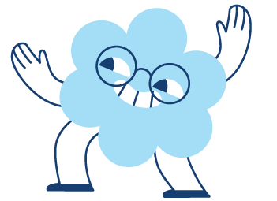

Mini design system
The homepage's elements and how they behave per device, for building Aandoeningen, Over mij and Afspraak. Professional, warm, clean, playful and contemporary. The playfulness comes from the characters and colour; the interface stays calm.
Colour
Warm neutrals carry the page. Coral is the action colour, navy is for text and links, and mint panels group content. Avoid "medical blue" fills, and use one accent per section.
Hairlines: #E2DBD1 or rgba(27,62,112,.18). Teal text on light backgrounds uses #00788C for 4.5:1 contrast.
Typography — Poppins
700 · −.025em · lh 1.2
clamp(32px,4vw,58px)
mobile clamp(25px,7.2vw,34px)
700 · −.02em · lh 1.08
clamp(28px,3.4vw,46px)
mobile = hero size
700 · clamp(20px,1.7vw,26px)
mobile 19–22px
600 · 21px · lh 1.28
tablet-768 17px · mobile 18–20px
400 · 18px · lh 1.6–1.7 · #41536D
tablet-768 16px
400 · 16px · lh 1.6–1.65 · #5B6C85
mobile 15px in steps
700 · 13px · .09–.11em · uppercase
13px is the floor for text
Layout, spacing, radius
1280px40px → 22px ≤640clamp(56px,7vw,96px)34–40px (mobile 28)18 desktop · 14 tablet · 12 mobile12 → 8 tablet/mobile0 16px 38px rgba(20,36,61,.16)#F3EFEAF2 + blur(10px)Components
Oogdruppels
Step card: number badge, icon, heading and short text.


Zorgpad Myopie
Article card: inset image (radius 20) inside a 28 card, title and a two-line summary.
#F9DDD8.
Waarvoor kunt u bij ons terecht
Intro line clears the character.
84px/110px padding on the heading and intro so text doesn't overlap.Page patterns
Building blocks from Klinieken, Over mij, Zorg voor kinderogen and the article template. Every inner page shares the homepage's header, footer and closing CTA.
Eyebrow, H1, a lead in the u-form, and optional anchor chips.

clamp(30px,4.2vw,56px); the profile H1 is smaller, clamp(28px,3.4vw,44px). One character per header, bottom-right. On mobile it's 80px, top-right, with 84px padding on the text.
tel:. ↗ = leaves the site: on the primary button it means booking happens on the clinic's own website, so keep it.


Ik benader elk kind op een rustige en respectvolle manier.clamp(22px,2.4vw,32px), with no quote marks and no card behind it. 3 min lezen
Zorgpad Amblyopie
Lees het artikel →
3 min lezen
Zorgpad Amblyopie
Lees het artikel →

Artikel.dc.html?a=key.Characters & icons




alt="".Home · Waarvoor kunt u bij ons terecht
Home · Zorg voor kinderogen
Home · De eerste raadpleging (tip) · Klinieken · time banner
Home · Drie locaties · Klinieken · page header
Afspraak · page header (Zorg voor kinderogen)
Over mij · Mijn aanpak
Artikel · red-flag block
FAQ · page header
Home, Over mij, Artikel · closing CTA
Responsive behaviour
1fr auto 1fr grid.clamp(25px,7.2vw,34px).max(490px,53vw), image shifted right, intro max 19em.auto-fit, minmax(268–276px,1fr), so cards land 3 per row.Accessibility & voice
#00788C, never plain teal or coral as text.